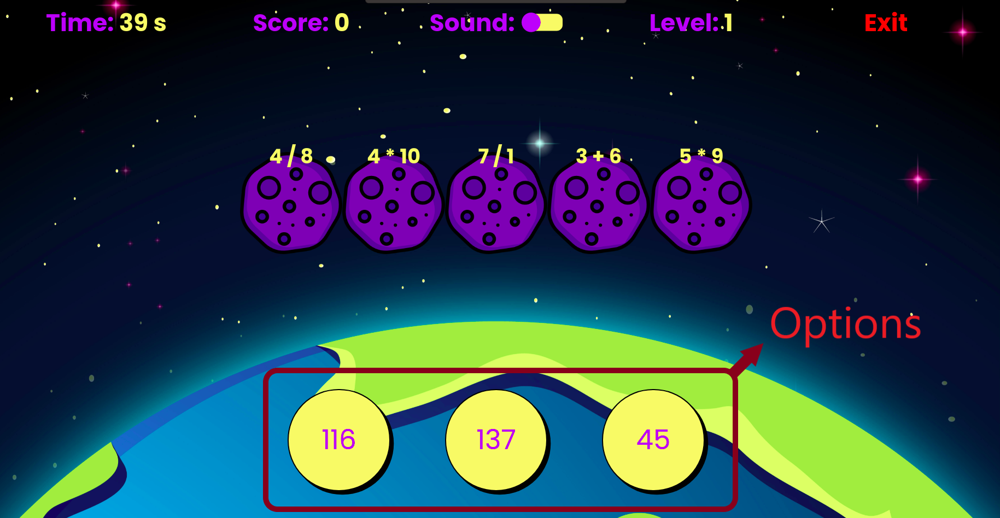

How to Play AstroMath - The Ultimate Math Game?
Welcome to AstroMath, the ultimate math game for number lovers and puzzle enthusiasts! This thrilling math challenge combines arithmetic, algebra, and mental math skills in an exciting space adventure.
Each asteroid displays a mathematical expression or equation. You'll be presented with three answer options below. Your mission is to solve the math problem quickly and select the correct answer that matches any of the asteroids on screen.
When you select the correct answer, the corresponding asteroid is destroyed, earning you points and bringing you closer to saving Earth. If you choose incorrectly, the asteroid is marked as missed and continues its path toward Earth.
To successfully complete each level, you must destroy at least 50% of the asteroids within the given time limit. As you progress through levels, the math problems become more challenging, testing your arithmetic, algebra, and mental math skills. Perfect for math game enthusiasts who love brain challenges!
Game Controls & Instructions:

Keyboard Controls
A Key : Select left answer option
S Key : Select middle answer option
D Key : Select right answer option
Mouse Controls
Left Click - Hover over any of the three answer options and click to select.
Game Tips
• Solve math problems quickly to destroy more asteroids
• Focus on accuracy - wrong answers count as missed asteroids
• Use mental math skills for faster problem solving
• Practice regularly to improve your math abilities